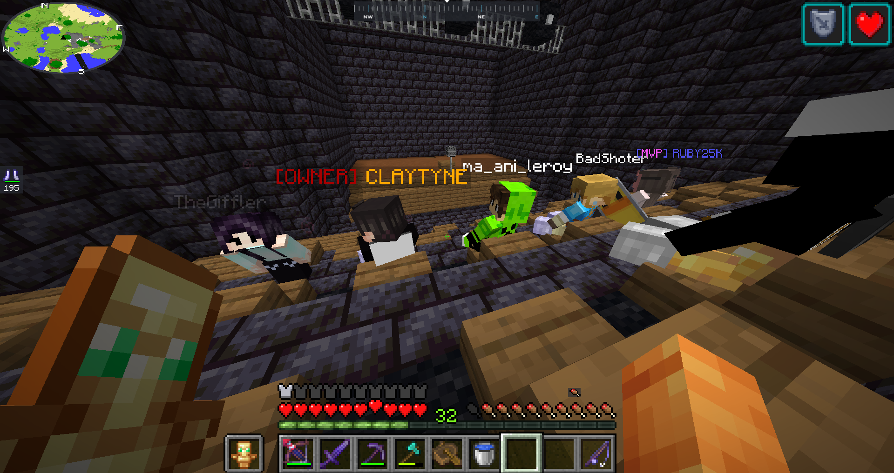
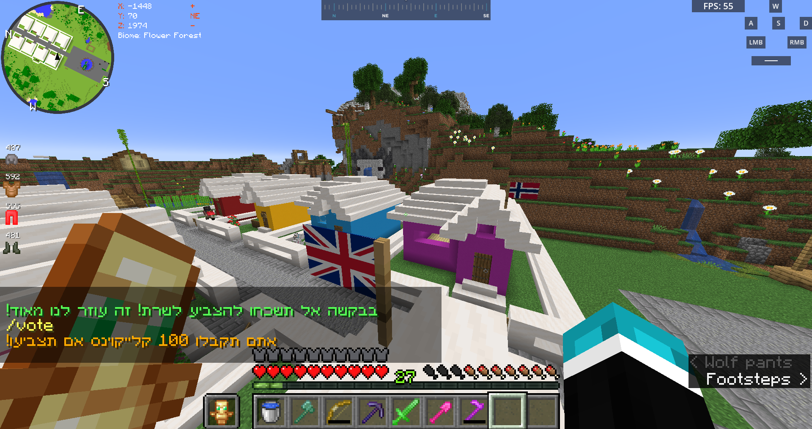
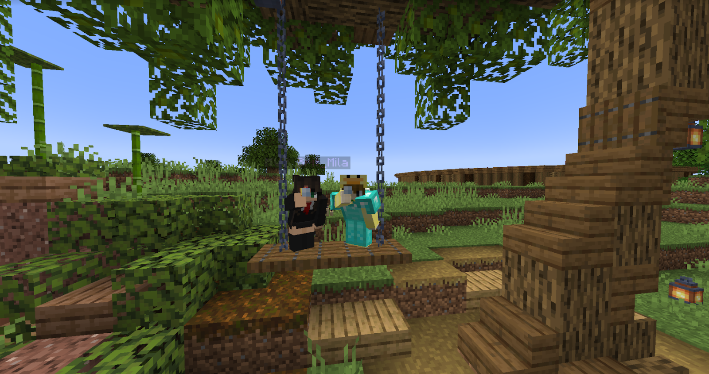
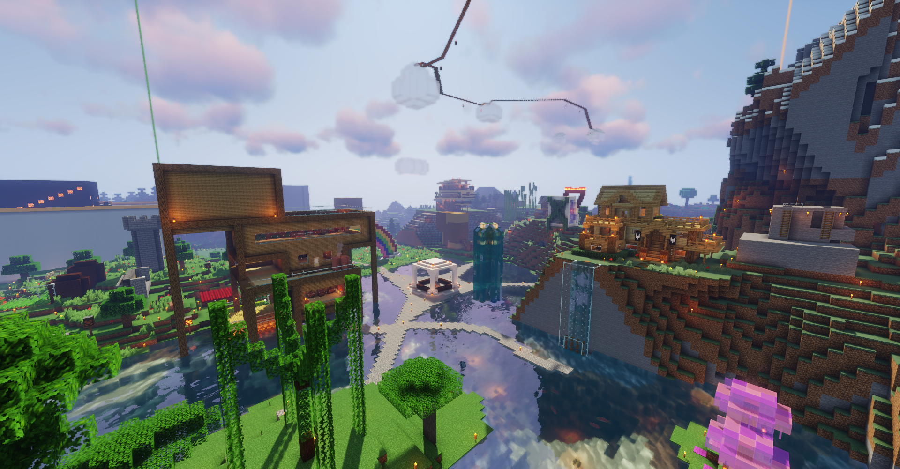
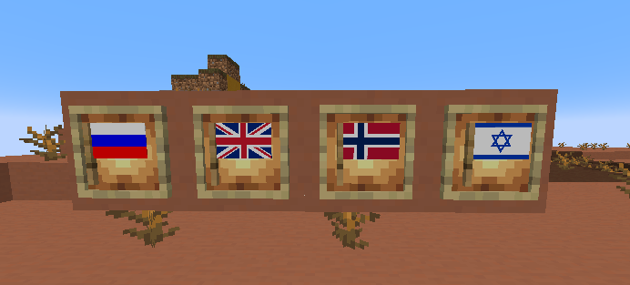
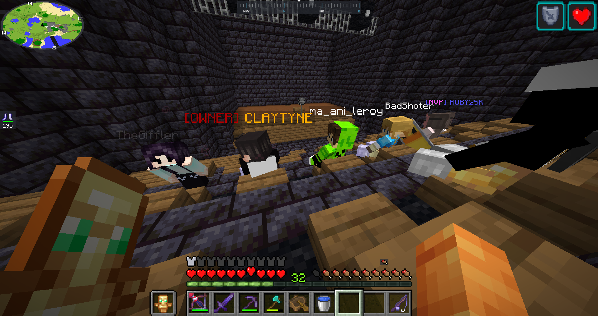
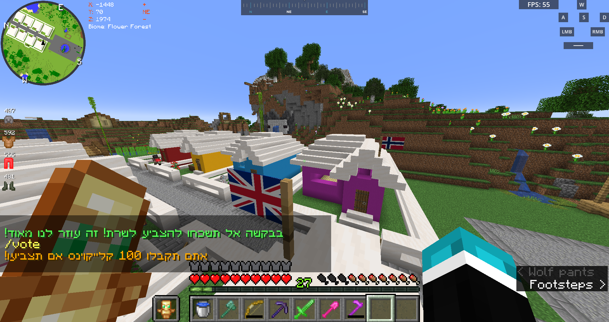
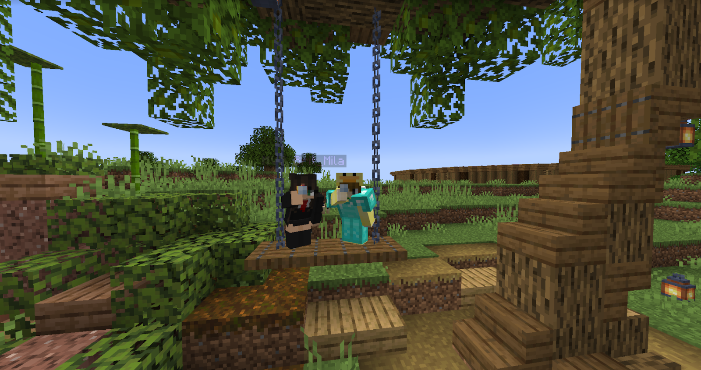
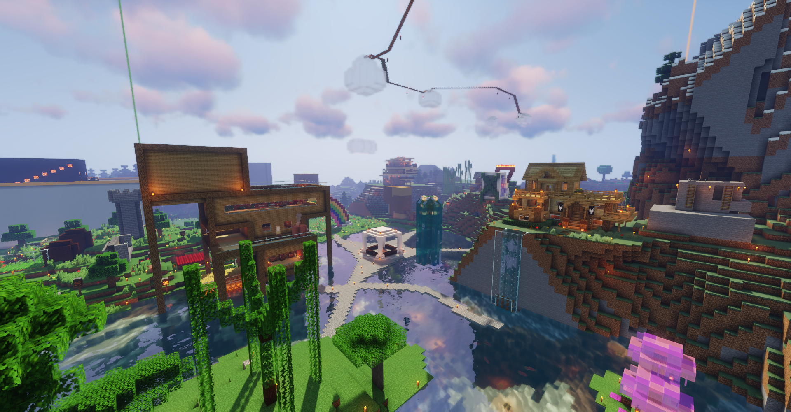
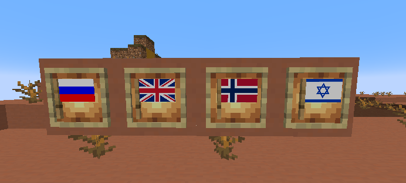

At the time I decided to open my own Minecraft server, I had a semi-large local TikTok following, so when I did open my SMP to the public, overnight the discord was floded with more than 500 members.
The server was a vanilla+ survival server, using utility plugins such as a simple home teleportion system, teleporting to friends, and some basic claims to avoid griefing. After around two months since the server became public, I decided to take it more seriously, recruiting two of my best friends at the time to be my right-hand men and help me moderate the players on the server.
We decided to reset the world and start with a fresh new 'season' of Claytyne (The name of the server). Over the following year and a half, I would create and manage six seasons of the server, each consisting of around two months, and then a reset.
Each season would come with a brand new spawn (A safe space for the players to trade, chat, and hang out) and new NPCs that give out quests and sell or buy items from the players for the server's currency. The start of a new season encouraged the players to try new ways of playing the game with different people. Many lifelong friendships formed in my server, and that is one of my biggest accomplishments.
I closed the server after around a year and a half to focus more on my social life and school education because I was struggling with mental health, and that had made it more difficult for me to do well in school.
The YouTube page of the server still exists to this day and remains an archive of the server's history.
The server has a very rich history, with over 350 players who have played for more than a season. Over 1000 unique players overall, 2000 members in the Discord server
Although the server was an Israeli server and the members communicated in Hebrew, we had members from all around the world, including Norway and the United Kingdom.
Paying for a server was an expensive and not so fun task I had to do, but shortly after upgrading the hosting service, I ran out of money, so I considered closing the server. Some members said that they would pay for a rank and suggested that I add ranks to the game. I didn't want to violate the EULA and ruin the game for the non-paying players, so all I gave ranks were some extra commands (which could not give them an advantage but only make their lives easier) and cool cosmetic items. I have had a variety of ranks, and I managed to keep the server up with a small profit of 200₪ each season.
It is in Hebrew, but it helps showcase the features of the last season of the server
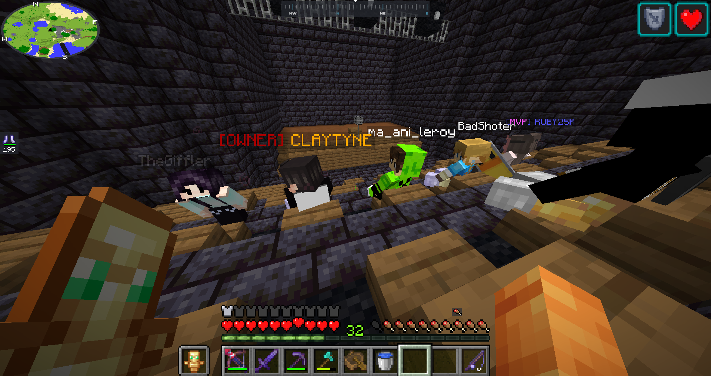
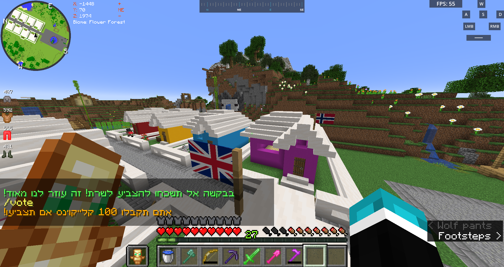
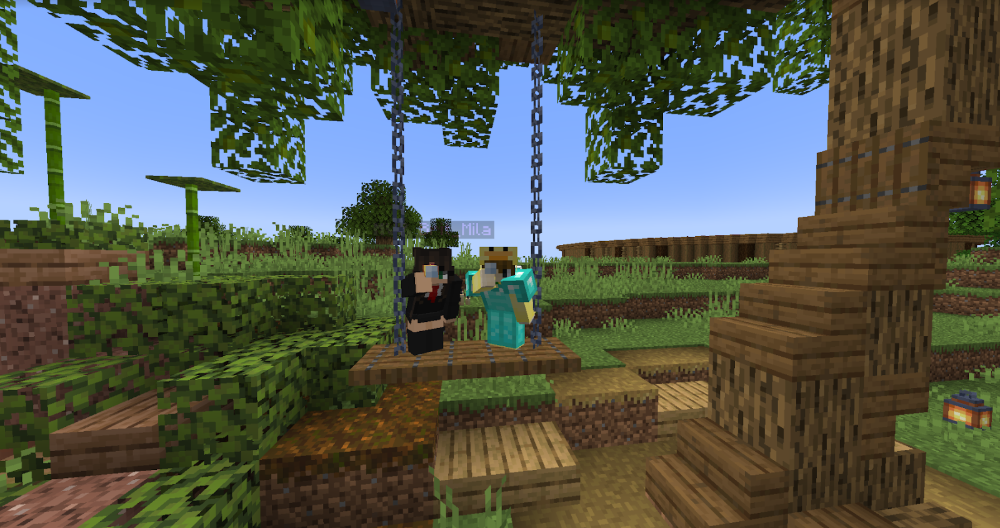
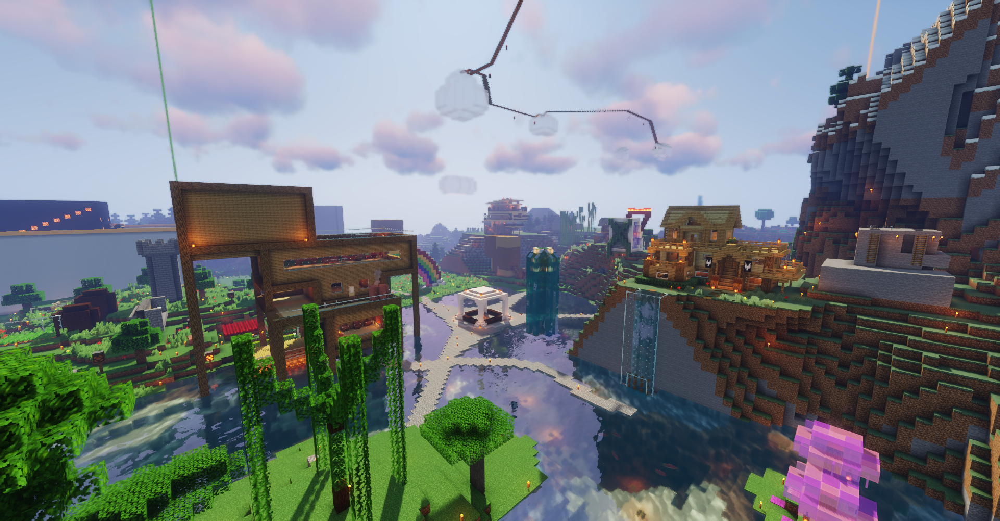
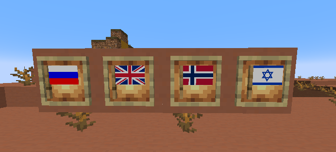